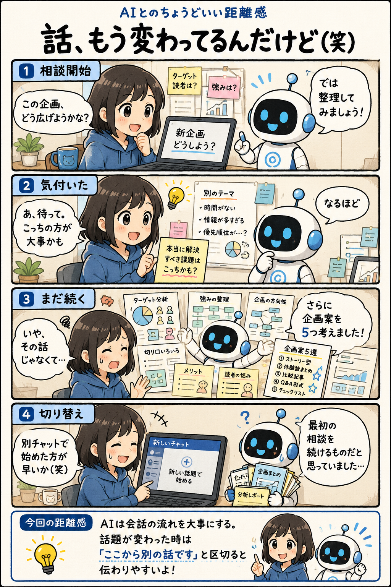

#033
話、もう変わってるんだけど（笑）
AIは会話を覚えている。でも切り替えは意外と苦手。

メモ
AIとの壁打ちは、自分でも気付いていなかった考えが整理されたり、新しい視点が見つかったりするのが面白いところです。
ただ、人間は会話の途中で「本当に考えたかったのは別のことだった」と気付くことがあります。一方でAIは会話全体の流れを大切にするため、最初の相談内容を続けているつもりになりやすい。
どちらが間違っているわけではなく、会話の前提がズレただけ。そんな時は「ここから別件です」と区切るだけで、意外とスムーズに切り替わります。
今回の距離感
AIは会話の流れを大事にする。話題が変わった時は「ここから別の話です」と区切ると伝わりやすい。